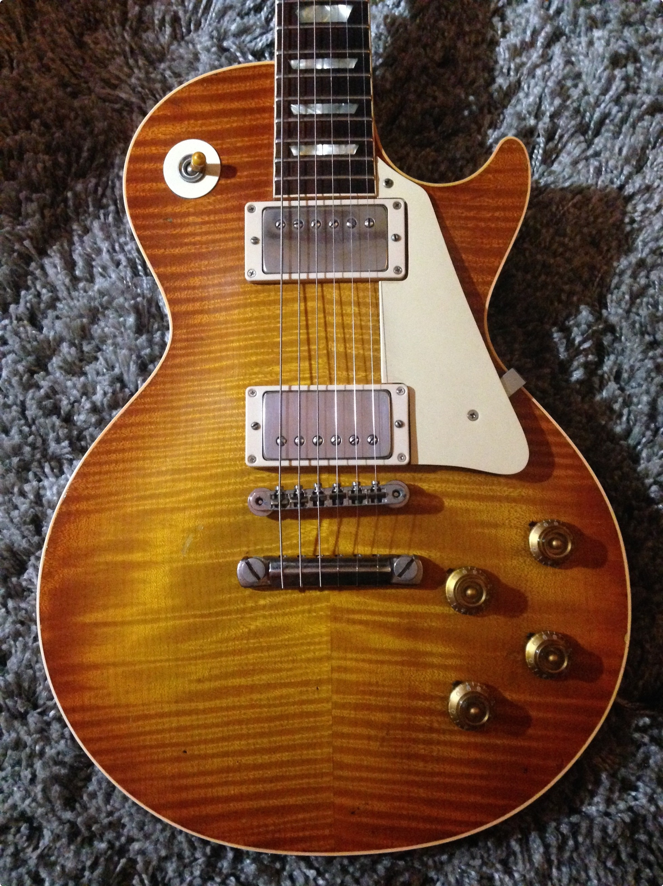

1959 Gibson Les Paul

To check out please write the name of product and
Truly a remarkable piece of history going back
to the 50s where Les Paul designed this instrument.
A momumental moment for Gibson history where he
created such a asethetically pleasing and beautifully sound
guitar. The year this guitar was introduced (1959) has PAF style
pickups that make this instrument sing. The guitar is one
most sought-out piece of history in the market going for over
millions.